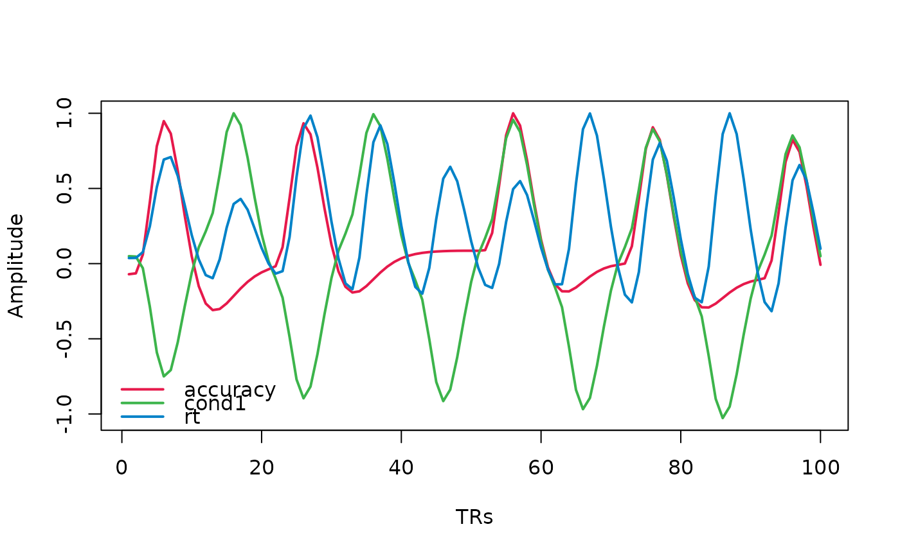

This function creates a visualization of an fMRI design matrix, showing the temporal evolution of regressors over time. It can handle various input formats and provides options to customize the visualization.
Usage
plot_design_fmri(
design_matrix,
TRs = 100,
events = NULL,
remove_nuisance = TRUE,
subject = 1,
legend_pos = "bottomleft",
...
)Arguments
- design_matrix
A design matrix for fMRI analysis. Can be a data frame, matrix, list of matrices, or an object of class 'emc.design'.
- TRs
The number of time points (TRs) to plot. Default is 100.
- events
A character vector specifying which regressors to plot. If NULL, all non-nuisance regressors will be plotted.
- remove_nuisance
Logical indicating whether to remove nuisance regressors (drift terms, polynomial terms, derivatives) from the plot. Default is TRUE.
- subject
The subject number to plot. Only applies for list of design matrices. Default is 1.
- legend_pos
Position of the legend. Default is "bottomleft".
- ...
Additional graphical parameters passed to matplot and legend.
Examples
# Example time series
ts <- data.frame(
subjects = rep(1, 100),
run = rep(1, 100),
time = seq(0, 99),
ROI = rnorm(100)
)
# Create a simple events data frame
events <- data.frame(
subjects = rep(1, 10),
run = rep(1, 10),
onset = seq(0, 90, by = 10),
condition = rep(c("A", "B"), 5),
rt = runif(10, 0.5, 1.5),
accuracy = sample(0:1, 10, replace = TRUE)
)
# Reshape with custom duration for each event_type
reshaped <- reshape_events(events,
event_types = c("condition", "accuracy", "rt"),
duration = list(condition = 0.5,
accuracy = 0.2,
rt = function(x) x$rt))
design_matrices <- convolve_design_matrix(
timeseries = ts,
events = reshaped,
covariates = c('accuracy', 'rt'),
factors = list(cond = c("condition_A", "condition_B")),
contrasts = list(cond = matrix(c(-1, 1))))
#> event_type subjects run onset modulation duration regressor
#> 1 condition_A 1 1 0 -1.0000000 0.5000000 cond1
#> 11 accuracy 1 1 0 1.0000000 0.2000000 accuracy
#> 21 rt 1 1 0 1.1012426 1.1012426 rt
#> 2 condition_B 1 1 10 1.0000000 0.5000000 cond1
#> 12 accuracy 1 1 10 0.0000000 0.2000000 accuracy
#> 22 rt 1 1 10 0.9598868 0.9598868 rt
#> 23 rt 1 1 20 1.3605504 1.3605504 rt
#> Filtering out high_pass noise, make sure you also use high_pass_filter(<timeseries>)
# Plot the design matrix
plot_design_fmri(design_matrices)
